Not only can you send messages
to an object, as you've done when you told your
Not only can you send messages
to an object, as you've done when you told your Graphics
object to use a different font, or asked your GImage
object to change its location, but things in the outside world
can send messages to your graphical Java programs, provided that
your programs are prepared to listen.
You can tell your graphical programs "listen" for all sorts
of outside events. Every time you move your mouse over your
applet or ACM GraphicsProgram, your computer
sends a message to your program saying,
"Somebody moved a mouse over you."
The name of this message is mouseMoved, and you can
respond when that happens by adding your own
mouseMoved() method to your program, containing
the actions that you'd like to occur.
This type of message is called an event, and, by writing a method in response (called an event handler), you can arrange to do something when the event occurs.
In this lesson, we'll look at the practical steps you need to do to handle both mouse events like this, (as well as button clicks). If some of this seems strange, don’t worry. We'll be coming back to event-handling in depth a little later, when you learn about interfaces. For right now, you’ll just get an overview of only a few events, so that you'll be able to write some interesting programs.
Event-Driven vs. Sequential Computing
 Sequence, selection, and iteration are the basic building
blocks of structured programming. In fact, from day one of this
course, you've learned to write programs where you get some
input, process it and then display the results in a strictly
linear fashion.
Sequence, selection, and iteration are the basic building
blocks of structured programming. In fact, from day one of this
course, you've learned to write programs where you get some
input, process it and then display the results in a strictly
linear fashion.
Input-processing-output has been at the center of the computing we've done during the first half of the course, and structured programming like this is very successful when applied to linear problems like processing the monthly payroll or sending out a set of utility bills. It's easy to see how you can feed a list of employees and their hours into one end of a program and get a pile of paychecks out the other.
Organizing this type of program like an assembly line works very well.
But how do you apply the linear model of an assembly line to your Web browser? Where is the beginning? Where's the end? When it comes to interactive software, using a linear organization, where programs are simply a collection of procedures that operate on data in a sequential manner, just doesn't work as well. As we saw back in Unit 6, a better method of organization is needed, and that's where OOP (Object-Oriented Programming) comes in.

Does this mean that such programs simply execute all of the statements in their code and then stop. No, not at all. Most of the programs you work with on your computer are not linear, but are examples of reactive or event-driven systems.
Event-Driven Java
In an event-driven, graphical operating system, like the Mac OSX, Windows, or X Windows in the Unix world, the mouse, keyboard, and display all belong to the operating system, rather than to your program. If the user moves her mouse over one of the windows you've created, or if the user clicks on a button on your form, or types a character into a text field, then the operating system notifies you telling you that such an event has occurred.
For Java, this creates a little bit of a problem. Java programs should run, unchanged, on the Mac and on your Linux or Windows machine, yet each of these operating systems has different and incompatible event notification systems. The solution the designers of Java arrived at was to create their own event handling system that sits on top of the native system provided by your operating system. This Java event system is integrated with the Abstract Windowing Toolkit or AWT.
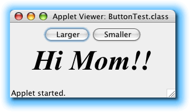
The earliest Java event model, introduced in Java 1.0, was a "hierarchical broadcast" model, which didn't really work well for larger programs. In Java 1.1, the early model was replaced by a new "publish-subscribe" model, usually called the Java 1.1 event model, even though it's still used in Java 2.
The Java 1.1 event model, (also known as the delegation model), works like subscribing to a newsletter or magazine. You tell a component to notify you when a certain event occurs—you can "subscribe" so to speak. You then create a class that you entrust to carry out an action when the notification arrives.
When the event occurs—a button is clicked, or a selection is made from a menu, for example—the component notifies only those objects which have subscribed to the particular event. If no one subscribes, then the component keeps the event information to itself, and doesn't "clutter up" the airways.
Making Hay While Your Mouse Moves
 Let's begin by making our applets respond to
mouse movement events. To make your your graphical program to take some action
when an event occurs there are three steps you have to go through:
Let's begin by making our applets respond to
mouse movement events. To make your your graphical program to take some action
when an event occurs there are three steps you have to go through:
- Prepare to accept event messages.
- Start listening for events.
- Respond to the event messages.
Let's start by looking at the "preparation" step.
Step 1: Preparation
The first step in listening for events is to import
the package, java.awt.event. The classes in
java.awt.event give your applet the power to
receive and respond to event messages, such as those sent by
the mouse when it moves.
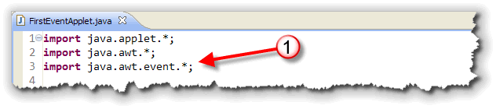
Note that importing the java.awt package is not
the same as importing the java.awt.event pagckage.
The java.awt package contains classes like Graphics
and Color which you'll still need in your programs.
The * at the end of the import java.awt.*;
line, imports all classes inside the java.awt
package, but does not import the classes in embedded
packages, like java.awt.event
To prepare to receive the messages from the mouse, the program
must also declare its willingness to receive those messages.
It does this by including a new phrase in its class header:
implements MouseMotionListener.
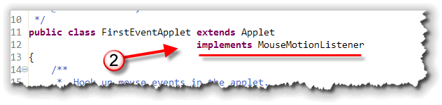
We'll talk more about what this means later, when we cover interfaces. For right now, it's fine to just think of it as a "magic incantation".In the code shown here, I've placed the
implements phrase on a separate line. That's not
really necessary; I've only done it for formatting reasons. It
is important that the phrase appears before the opening
brace of the class body, though.
Step 2: Subscribing
Once that’s accomplished, all that’s left is to throw the
switch saying "Give me the messages". This is done inside
init() method (or the constructor), by invoking the method
addMouseMotionListener() like this:
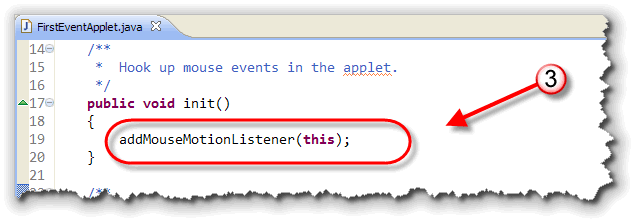
When you call this method, you pass a parameter, the keywordthis, which works like the word "me" in English;
it refers to the program itself. The message says, in effect,
"Send me a message whenever the mouse moves: I’m listening!"
How, exactly, does your program listen? Since listening is a behavior, you might guess that listening involves a method and you're right. In fact, in this case, it involves two new methods, each one listening for a different sort of message from the mouse.
You determine what happens when the mouse is moved
or dragged by writing statements that go inside each of these
methods. Let’s look at those methods, mouseMoved()
and mouseDragged().
Step 3: Responding
The mouseMoved() method is called whenever the
user moves the mouse across the surface of the program.
Here's an applet with the basic definition for this method
already defined:
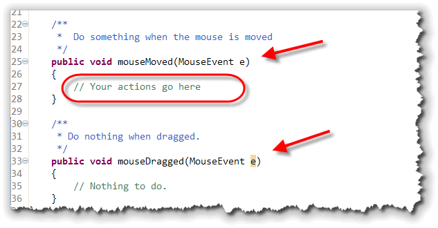
Each time the method is called, Java sends along a event parameter containing useful information about the event, such as the position of the mouse.The MouseEvent Parameter Variable
To handle this parameter,
the method header of mouseMoved() must define a
formal MouseEvent parameter variable, which
seems appropriate enough. You’ll learn more about such
event objects later in the course, so for the moment let’s
simply say that the MouseEvent parameter
is used to describe something that’s happened involving the mouse.
e, evt or
event. This is the name by which the parameter
is known inside the mouseMoved() method. You should
chose a name so that its association with the MouseEvent
object can be easily remembered.
Event-handling Statements
Just what your program does in response to the movement
of the mouse is determined by the statements that you write
within the body of the mouseMoved() method.
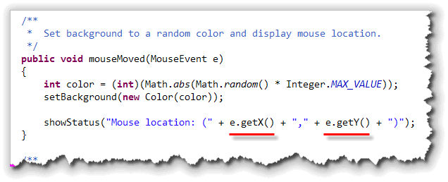
If your actions depend on the location of the mouse pointer when the mouse was moved, that can be determined by asking theMouseEvent parameter for the location of the
mouse, via its getX() and getY()
methods.
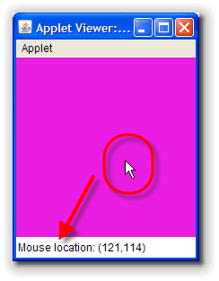
In the example here, I've added code to set the background
of the applet to a random color. I've also used the applet's
showStatus() method to display the location of
the mouse pointer each time the mouse is moved.
MouseDragged
What about the second new method, mouseDragged()?
This method is called whenever the mouse is moved
while the mouse button is held down. You’ll notice that there
are no statements in the body of this method, which consists
only of the curly braces ({}).
What does the applet do when
it receives a mouseDragged() message?
The right answer is: nothing. So, why bother to define the
mouseDragged() method at all? It’s required!
When your program declares it knows how to handle mouse
movement messages (by including implements
MouseMotionListener in its class header), it is
promising that it will define a method
to handle each type of message relating to mouse movement.
There are exactly two of these (mouseMoved() and
mouseDragged( )); if you omit either, the
program will not compile.
If you want to run FirstEventApplet.java on your own machine, you can download it by clicking the link in this sentence.
ACM Mouse Event Handling
You can use the same techniques for handling mouse events inside your ACM graphical programs, but, as usual, the ACM libraries make things a little easier; You don't have to go to all of that work.
Here are the steps you need to follow.
- Preparation: You do need to
importthejava.awt.eventpackage to make the event-handling classes available to your program. However, you do not need to add anything extra to the class header. TheGraphicsProgramclass has already done this for you.
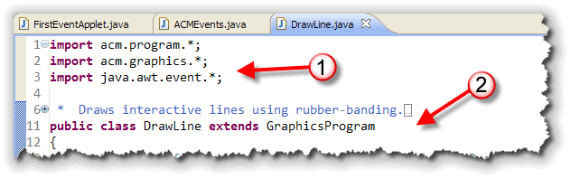
- Subscribing: Instead of writing
addMouseMotionListener(this);, just add the line:
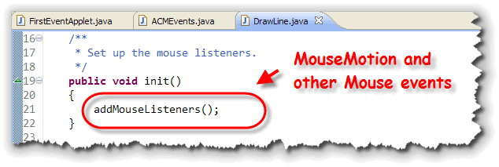
to the end of yourinit()method. This adds both mouse motion listeners as well as the other mouse event listeners such as mouse clicks and mouse over. Doing this would require extra steps in an applet. - Responding: In your ACM programs, you only
need to write the methods that you intend to actually supply
actions for. Again, the ACM
GraphicsProgramclass comes to your rescue, writing the "empty" methods that you needed to write yourself using the bare Java event-handling techniques.
Other Mouse Events
In addition to the mouseDragged() and
mouseMoved() events, the ACM GraphicsProgram
class also implements the MouseListener interface,
which specifies these additional five methods that you can use
in your programs:
- mousePressed(): called whenever the mouse button is pressed down.
- mouseReleased(): called whenever the mouse button is released after being pressed down.
- mouseClicked(): called whenever the mouse button is pressed
down and then released within a short period of time. (Each
mouseClicked()event is always accompanied by amousePressed()followed by amouseReleased(). - mouseEntered(): called whenever the mouse pointer enters the canvas area of your program.
- mouseExited(): called whenever the mouse leaves the canvas area of your program.
An Example
DrawLine.java is
an example program that responds to both the mousePressed
event and the mouseDragged event, to create an
interactive line-drawing program. (You can click the link in the
previous sentence if you want to compile and run the program on
your own computer.)
The mousePressed Event
When the user clicks the mouse anywhere on the program's canvas,
a mousePressed event is triggered. The program
responds to that event by executing the code inside the
mousePressed() event handler method, shown here:
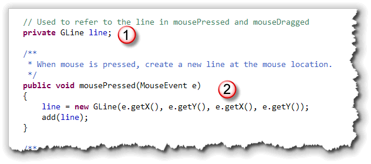
Inside the method, the program creates a newGLine
object, located at the position of the mouse. Since the end-point
of the line is set to the same position, the line has zero length.
When the line is created, it is assigned to the instance
variable named line. By using an instance
variable, the same object can be manipulated in different
methods, specifically the mouseDragged() method.
The mouseDragged Event
The line object is created and added to the
canvas in the mousePressed() method. If the
user keeps the mouse button down and then moves the
mouse, the mouseDragged() method will be
called.
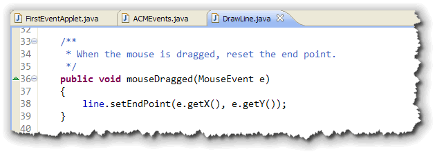
When the mouse button is released, the mouse
dragging event ends. Then, if the user presses the mouse
down again, a new GLine object will be created.
Inside the mouseDragged() method, the end-point
of the line is reset. This creates a "rubber-band" drawing
effect, where the end-point of the line follows the mouse
until the mouse button is released, at which point, the
line is "fixed".
Try it Yourself
If you don't want to download and run the program on your own computer, you can try it out yourself right here:
JButtons and Events
When a JButton object is clicked, instead of
generating mouse events, it generates
a specific kind of event object called an
ActionEvent.
ActionEvent objects are not specific to buttons; if you press the ENTER key inside a TextField object, or, if you double-click an entry in a List object, the component will generate an ActionEvent object as well.
To perform an action when a JButton object is
clicked (inside your ACM graphical programs), you only have to
do these three things:
- Make sure that the
java.awt.eventpackage is available, just like you did when working with the different mouse events. - Tell your program to subscribe to
any
ActionEvents generated by theJButtonobjects you've added to your program. In your ACM programs, you'll do this by callingaddActionListeners()from inside yourinit()method. - Add an
actionPerformed()method to your program where you'll respond whenever any of the buttons in your program are selected.
Here's an example program
ButtonActions.java that is very similar to
the ButtonWorld program you saw in the last lesson.
 Instead of three buttons, though, I've added a
Instead of three buttons, though, I've added a JLabel
and one of the ACM GUI components, the
DoubleField, so that you can interactively change
the radius of the circle displayed on the screen.
Step 1: Import the Packages
As always, you'll also need to import the
package containing the ActionEvent and ActionListener
classes. These listeners are in the same package as the
mouse events: java.awt.event. It's easy to
forget to add this line to the top of your program:
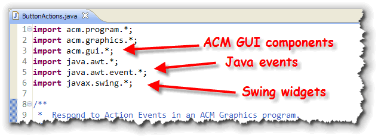
Notice that in addition to the Java event packages, I also need to remember to import:- The
acm.guipackage which contains the code for the "enhanced" numeric version of theJTextFieldclass, calledDoubleField. We could useJTextField, of course, but then we'd have to handle converting the radius fromStringtodoubleourselves. - The
javax.swingpackage that contains the Swing GUI components, such asJLabelandJButton.
Step 2: Initialize the Application
Reactive or event-driven programs often do not have a
run() method. Instead, we'll put all of our
code inside the init() method as well as the
event-handlers that will be called as the users interact
with our app. Instead of just looking at the code that
sets up the event-handling, let's look at each of the
main points inside the init() method.
Instance Variables
Our program starts by defining several instance variables
that will be used inside both the init() method as
well as from inside the event-handlers:
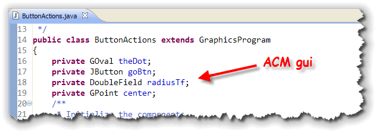
There are fields for each of the GUI components, as well as aGPoint to store the center of the screen (so we don't
need to calculate it again and again.)
Creating the Objects
The first section inside init() simply calls the
various constructors to create each of the objects associated
with our program's fields:
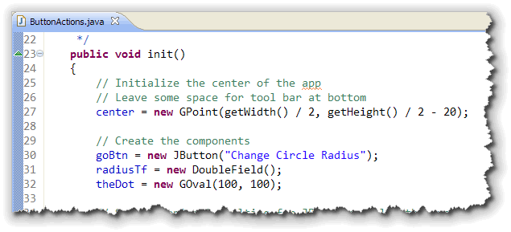
TheGPoint used to keep track of the center of the application
is offset by 20 pixels up from the bottom, to allow for the toolbar at
the bottom of the screen.
Additional Initialization
While each object's constructor is responsible for initializing
the objects you create, often, especially with GUI apps, you'll
find that many components need additional intialization,
such as that shown here:
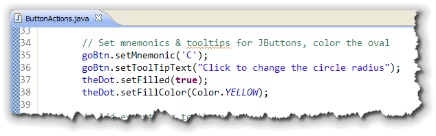
In addition to adding a hot-key and tool-tip for the button, the program sets the fill color for the dot on the screen as well.Adding and Actions
After the objects are created and any initialization is
preformed, each of the components is added to the toolbar at the
bottom of the screen. The GPoint is used to calculate
the location of the GOval object:
 The last line in the
The last line in the init() method is the line
the activates the event handling for your buttons. (If you
want to respond to mouse events also, you can add an
addMouseListeners() line as well.)
Step 3: Responding
How will the JButton object, goBtn, notify
you when an ActionEvent occurs? It will send a
particular message, passing along the ActionEvent
object as an argument. The name of the message—and the method
you must write—is actionPerformed(), and you'll
place it inside your class:
 In the body of the
In the body of the actionPerformed()
method, you can carry out the actions you want to occur when
goBtn is clicked.
In this case, I:
- Extract the new radius from the
DoubleFieldnamedradiusTf. Note that the ACM GUI component doesn't require me to convert the value, but allows me to read it directly, using itsgetValue()method. - Use the new radius value to first position and then
resize the
GOvalobject on the screen.
Handling the Focus
When the user enters a new radius into the text field, and
then clicks the button, the GUI focus remains on the
JButton object. To go back and enter another
value, the user has to either use the tab key, or click with
the mouse and erase the old value in the text field.
To make your code more user-friendly, you can perform those
two steps using code, each time the actionPerformed()
method is called, like this:
 The first line selects all of the text inside the text field,
while the second line sends the keyboard focus back to that
field. All the user has to do is type a new value.
The first line selects all of the text inside the text field,
while the second line sends the keyboard focus back to that
field. All the user has to do is type a new value.
Multiple Buttons
If you have multiple buttons inside your application, all of
them will call the same actionPerformed()
method. Inside your method, you'll need to determine which
button actually triggered the event.
You can do that in two ways:
- You can call the
ActionEventparameter'sgetSource()method, and compare theObjectreference that you get back to the button you want to respond to. Here's what that would look like, if you had a second button named colorBtn that changed the oval's color:

- You can call the
ActionEventparameter'sgetActionCommand()method to "read" the text appearing on the button, and differentiate between the buttons that way. This works even if the button was not defined as an instance variable. Here's what that looks like:

Coming Up Next ...
In this lesson, you learned how to respond to mouse events, that occur when the user moves or clicks the mouse, and how to respond to action events, those that occur when the button is clicked.
In the next lesson, we'll make your programs even more interesting and interactive by learning how to perform animation.